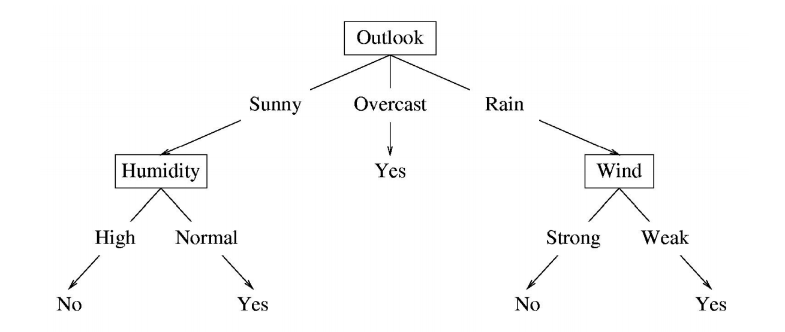

Machine Learning - Decision Tree
Decision Tree
A Decision Tree is a hierarchically organized structure, with each node splitting the data space into pieces based on value of a feature.
Decision Tree Model

- Each internal node: test one attribute $X^{(i)}$
- Each branch from a node: selects one value for $X^{(i)}$
- Each leaf node: predict $Y$
Decision Boundary
- Decision trees divide the feature space into axis-parallel (hyper-) rectangles
- Each rectangular region is labeled with one label
- Decision trees can represent any function of the input attributes
Decision Tree Algorithm
Three steps:
- Attribute selection
- Tree generation
- Pruning
Commonly used algorithms:
ID3(Iterative Dichotomiser 3)C4.5(Implemented in C lang, 4.5 is the version)CART(Classification And Regression Tree)
Attribute Selection
choosing which attribute to split a given set of examples
Some possiblilites are
- Random: Select any attribute at random
- Least-Values: Choose the attribute with the smallest number of possible values
- Most-Values: Choose the attribute with the largest number of possible values
- Max-Gain: Choose the attribute that has the largest expected information gain
- i.e., attribute that results in smallest expected size of subtrees rooted at its children
Information Gain
How to measure uncertainty?
EntropyMisclassification ErrorGini Index
Entropy
What is the entropy of a group in which all examples belong to the same class?
What is the entropy of a group with 50% in either class?
From Entropy to Information gain
We want to determine which attribute in a given set of training feature vectors is most useful for discriminating between the classes to be learned. Information gain tells us how important a given attribute of the feature vectors is. We will use it to decide the ordering of attributes in the nodes of a decision tree.
Specific conditional entropy $H(Y \mid X^{(i)}=a)$ of the feature $X^{(i)} = a$:
Conditional Entropy
Suppose the $i$-th feature of random variable $X$ has $M_i$ different values to choose. Let $a_j$ be the $j$-th value of $X^{(i)}$.
Information Gain is the expected reduction in entropy of target variable Y for data sample
Information Gain Ratio
Decision Tree Generation
ID3
1 | ID3 (Examples, Target_Attribute, Attributes) |
C4.5
This algorithm has a few base cases.
- All the samples in the list belong to the same class. When this happens, it simply creates a leaf node for the decision tree saying to choose that class.
- None of the features provide any information gain. In this case, C4.5 creates a decision node higher up the tree using the expected value of the class.
- Instance of previously-unseen class encountered. Again, C4.5 creates a decision node higher up the tree using the expected value.
The general algorithm for building decision trees is
- Check for the above base cases.
- For each attribute a, find the information gain ratio from splitting on a.
- Let a_best be the attribute with the highest information gain.
- Create a decision node that splits on a_best.
- Recurse on the sublists obtained by splitting on a_best, and add those nodes as children of node.
Pruning
Irrelevant attributes can result in overfitting the training example data.
How to avoid overfitting?
- Stop growing when data split is not statistically significant
- Acquire more training data
- Remove irrelevant attributes (manual process – not always possible)
- Grow full tree, then
post-prune
How to select “best” tree?
- Measure performance over training data
- Measure performance over separate validation data
- Add complexity penalty to performance measure (heuristic: simpler is better)
Denote the number of leaf nodes of a decision tree $T$ as $|T|$, $t$ is a leaf node which contains $N_t$ data points. For each leaf node $t$, it contains $N_{tk}$ data points that belong to class $Y = y_k,\, k = 1, \ldots, K$. $H_t(T)$ is the emperical entropy of node $t$. $\alpha \geq 0$ is a regularization parameter.
A larger $\alpha$ value tends to choose a simpler model. $\alpha = 0$ means only considering the fitting to the training set regardless of the complexity of the model.
Bottom-up pruning
- Calculate the empirical entropy of each node.
- Shrink the tree recursively from the leaf nodes.
Suppose the decision tree before and after the shrinking is $T_A$ and $T_B$, and if $C_\alpha(T_A) \leq C_\alpha(T_B)$, perform the pruning. The parent node becomes to be the new leaf node. - Repeat step 2 until we obtain the tree that minimizes the loss function.
CART Algorithm
- Consider all predictor $X^{(i)}$ and all the all possible values of the cutpoints s for each of the predictors. Choose the predictor and cutpoint s.t. it minimizes the Gini IndexThis can be done quickly, assuming number of predictors is not very large
- Repeat #1 but only consider the sub-regions
- Stop: node contains only one class or node contains less than n data points or max depth is reached
Interview Questions
Explain the differences between Random Forest and Gradient Boosting machines.
Random forests are a significant number of decision trees pooled using averages or majority rules at the end. Gradient boosting machines also combine decision trees but at the beginning of the process unlike Random forests. Random forest creates each tree independent of the others while gradient boosting develops one tree at a time. Gradient boosting yields better outcomes than random forests if parameters are carefully tuned but it’s not a good option if the data set contains a lot of outliers/anomalies/noise as it can result in overfitting of the model.Random forests perform well for multiclass object detection. Gradient Boosting performs well when there is data which is not balanced such as in real time risk assessment.